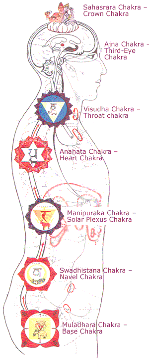

| |
The human body contains
hundreds of locations where there is focused and concentrated
energy. There are, however, seven major energy centers, commonly
referred to as “chakras.” Chakra is a sanskrit word which means
“wheel.” The chakras are similar to wheels, in that they are
spinning vortexes of energy. They are centers of force, located
within our etheric body, through which we receive, transmit and
process life energies.
|

|
|
|
Chakra Map - Click on each chakra
above for a description
|
|
Each chakra in the body is
recognized as a focal point of life-force relating to physical,
emotional, mental, and spiritual energies. The chakras are the
network through which body/mind/spirit interact as one holistic
system.
The seven major chakras
correspond to specific aspects of our consciousness and have
their own individual characteristics and functions. Each has a
corresponding relationship to one of the various glands of the
body’s endocrine system, as well as to one of the seven colors
of the rainbow.
The main purpose in working
with and understanding the chakras is to create integration and
wholeness within ourselves. In this way, we bring the various
aspects of our consciousness, from the physical to the
spiritual, into a harmonious relationship. Ultimately, we begin
to recognize that the different aspects of ourselves all work
together, and that each aspect is as much a part of the whole as
the others. We must be able to acknowledge, accept and integrate
all levels of our being.
The chakras are doorways for
our consciousness. They are doorways through which emotional,
mental, and spiritual force flow into physical expression. They
are openings through which our attitudes and belief systems
enter into and create our body/mind structure. The energy
created from our emotions and mental attitudes runs through the
chakras and is distributed to our cells, tissues, and organs.
Realizing this brings tremendous insight into how we ourselves
affect our bodies, minds and circumstances for better or worse.
To understand the chakras and
their relationship to our consciousness, it is better to
understand ourselves. Understanding ourselves will enable us to
make our choices and decisions from a place of awareness and
balance, rather than being blindly influenced by forces we do
not understand.
The most powerful way to
open, activate, energize, and balance all of our chakras and
keep our bodies and minds in a healthy condition is to love
ourselves and others unconditionally. Love is the greatest
healer. Love is the vitalizing, nourishing, sustaining
electricity of life.
Each one of us are
interconnected and a holographic part of All that Is. As we open
ourselves into greater expression of love, wisdom and power, we
give this gift to all of creation. As one person becomes whole,
humanity is that much closer to wholeness. We must remember this
and take hold of our personal responsibility to ourselves and to
an awakening humanity. Love is the source of all healing, Love
Is.
1.
Muladhara Chakra: Beginning of Awareness
Location: Base of the spine (coccyx)
Color: Blood-red (secondary color is black)
Element: Earth
Function: Gives vitality to the physical body. Life
force, self-preservation, instincts.
Qualities & Lessons: Matters relating to the material
world, success. Mastery of the physical body. Grounding,
individuality, stability, security, stillness, health, courage,
patience.
Gems/minerals: Ruby, garnet, bloodstone, red jasper,
black tourmaline, obsidian, smoky quartz
Chakra Jewelry to stimulate and heal the 1st (Base)
Chakra:
Chakra Neckalces
Chakra Map
2.
Swadhisthana Chakra: Dwelling Place of Self
Location: Lower abdomen to navel area
Color: Orange
Element: Water
Functions: Procreation, assimilation of foods, physical
force and vitality, sexuality.
Qualities & Lessons: Giving and receiving, strong
emotions, desire, pleasure seeking, sexual/passionate love,
change, movement, assimilation of new ideas. Good health,
tolerance, surrender. Working harmoniously and creatively with
others.
Gems/minerals: Carnelian, garnet, coral, gold calcite,
amber, citrine, gold topaz, peach aventurine, chrysoprase
Chakra Jewelry to stimulate and heal the 2nd (Naval)
Chakra:
Holy Tree,
Lotus,
Devotion necklaces
Chakra Map
3. Manipura Chakra:
Transformation of Being
Location: Above the navel, bellow the chest
Color: Yellow
Element: Fire
Functions: Vitalizes the sympathetic nervous system,
digestive processes, metabolism and emotions.
Qualities & Lessons: Will, personal power, authority,
energy, mastery of desires, self-control. Radiance, warmth,
awakening, transformation, humor and laughter.
Gems/minerals: Citrine, gold topaz, amber, tiger eye,
yellow sapphire, gold.
Chakra Jewelry to stimulate and heal the 3rd (Solar
Plexus) Chakra:
Holy Tree,
Champage Goddess,
Exotica necklaces
Chakra Map
4. Anahata Chakra:
Healing and Compassion
Location: Center of the chest
Color: Green (secondary color is pink)
Element: Air
Functions: Anchors the life force from the higher self.
Energizes the blood and physical body with the life force
(breath) and regulates blood circulation.
Qualities & Lessons: Divine, unconditional love.
Forgiveness, compassion, understanding, balance, group
consciousness, oneness with life. Acceptance, peace, openness,
harmony and contentment.
Gems/minerals: Emerald, green and pink tourmaline,
malachite, green jade, green aventurine, chrysoprase, kunzite,
rose quartz, ruby.
Chakra Jewelry to stimulate and heal the 4th (Heart)
Chakra:
Shree Ganesh,
Holy Tree,
Lotus necklaces
Chakra Map
5. Visuddha Chakra:
The Expression of Creativity
Location: Throat area
Color: Blue
Element: Ether
Functions: Speech, sound, vibration, communication
Qualities & Lessons: Power of the spoken word. True
communication. Creative expression in speech, writing and the
arts. Integration, peace, truth, knowledge, wisdom, loyalty,
honesty, reliability, gentleness and kindness.
Gems/minerals: Turquoise, chrysocolla, celestite, blue
topaz, sodalite, lapis lazuli, aquamarine, azurite, kyanite.
Chakra Jewelry to stimulate and heal the 5th (Throat)
Chakra:
Buddha's Delight,
Mon Iza,
Maha Marsha necklaces
Chakra Map
6. Ajna Chakra: The
Knowledge of Being
Location: Center of the forehead, between the eyebrows.
Color: Indigo
Element: Light
Functions: Vitalizes the lower brain and central
nervous system. Regulates vision.
Qualities & Lessons: Soul realization, intuition,
insight, imagination. Clairvoyance, concentration, peace of
mind. Wisdom, devotion, perception beyond duality.
Gems/minerals: Lapis Lazuli, azurite, sodalite, clear
quartz, sapphire, iolite, tourmaline
Chakra Jewelry to stimulate and heal the 6th (Third Eye)
Chakra:
Devotion,
Shree Shree Ganesh,
Buddha's Delight necklaces
Chakra Map
7. Sahasrara Chakra:
Endless Possibilities
Location: Top of the head
Color: Purple
Element: Thought/Will
Functions: Vitalizes the upper brain
Qualities & Lessons: Unification of the higher self
with the human personality. Oneness with the infinite. Spiritual
will, inspiration, unity, wisdom and understanding. Idealism,
selfless service. Perception beyond space and time. Continuity
of consciousness.
Gems/minerals: Amethyst, alexandrite, diamond, sugilite,
purple fluorite, clear quartz, selenite.
Chakra Jewelry to stimulate and heal the 7th (Crown)
Chakra:
Holy Tree,
Shree Ganesh,
Holy Tree necklaces
Chakra Map |